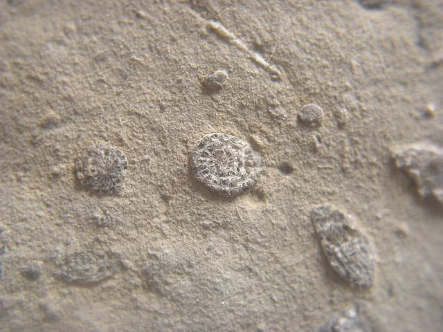
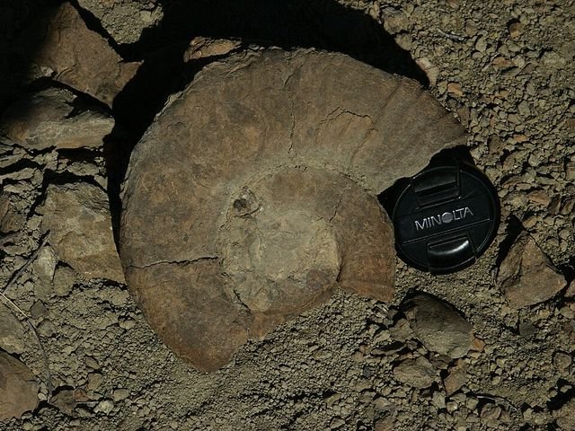
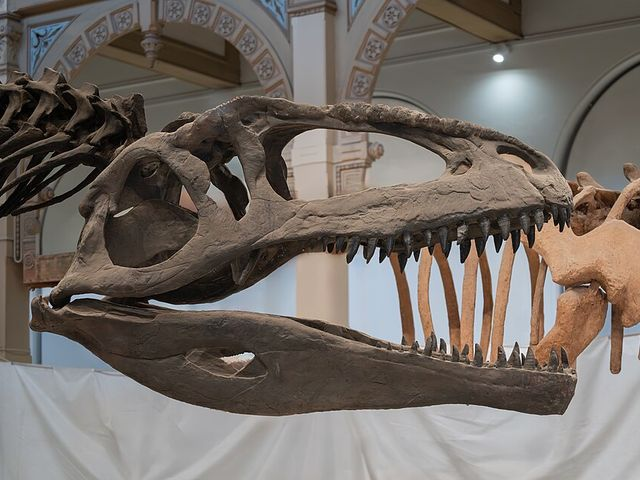
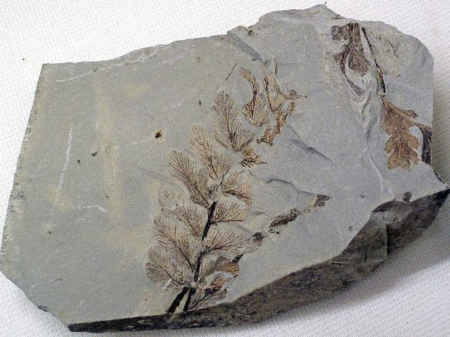

Ingresantes
Todo lo que necesitás saber para empezar la Licenciatura en Paleontología: qué es, qué se estudia, para qué te habilita el título y cómo inscribirte.
¿Qué es lapaleontología?
Para develar el pasado de la vida en la larga historia de la Tierra hay que conocer sobre biología y también sobre geología. La Licenciatura en Paleontología es una amalgama de ambas, pero con características únicas: concentra los conocimientos más específicos de esas dos áreas y da entrada al mundo de los restos fósiles, tales como los primeros organismos unicelulares, los metazoos, los grandes dinosaurios, las plantas y las estructuras geológicas que cuentan sobre el ambiente en el que vivió cada organismo.
Por eso la carrera exige cursar materias tanto en los departamentos de Ciencias Biológicas como en el de Ciencias Geológicas, y reconoce formalmente esta dualidad de la disciplina.

Microfósiles
Invertebrados
Dinosaurios
Plantas


_(Fort_Union_Formation,_Paleocene;_Yellowstone_County,_Montana,_USA).jpg){kind=link}
Perfil del egresado
La carrera brinda una robusta preparación teórica y práctica, acorde con las exigencias actuales de una disciplina que abarca campos tan disímiles como la bioestratigrafía y la indagación teórica sobre problemas evolutivos.
Los y las estudiantes aprenden sobre debates actuales en biología evolutiva, sistemática y paleobiología, a analizar problemas desde un punto de vista cuantitativo y a diseñar experimentos que permitan resolver problemas de macroevolución y del estudio de los organismos fósiles. Los conocimientos en geología permiten comprender tanto el ambiente local donde se depositó el organismo fosilizado como los procesos geológicos generales que actuaban cuando el fósil era aún un organismo vivo, y las posibles causas de eventos mayores como las extinciones masivas.
La formación interdisciplinaria permite desempeñarse en tareas aplicadas, como la industria del petróleo, museos, extensión científica o la relación con los medios, y acceder a estudios de posgrado, incluido el Doctorado de la UBA en el área Paleontología.
Objetivosde la carrera
Preparar profesionales idóneos para realizar todos los trabajos específicos relacionados con la actividad paleontológica, en el contexto de una formación de excelencia.
Promover el análisis, la comprensión y la fijación de conocimientos teóricos sólidos, complementados con un entrenamiento práctico intensivo desde el comienzo de la carrera.
Contribuir a la profundización de los conocimientos de las ciencias básicas que constituyen los cimientos del quehacer paleontológico.
Dotar a cada estudiante de los conocimientos necesarios para realizar actividades de investigación, o ligadas más directamente a aspectos productivos y de extensión.
Campo laboral e incumbencias
El título de Licenciado/a en Paleontología tiene reconocimiento oficial y validez nacional (Resolución N.º 922/2014 del Ministerio de Educación de la Nación). La Ley Nacional 25.743 de Protección del Patrimonio Arqueológico y Paleontológico establece que los yacimientos paleontológicos son del dominio del Estado y que su defensa, estudio y conservación son de interés público. En ese marco, quienes egresan tienen incumbencias para:
Asesoramiento
Asesorar a los organismos competentes encargados de la preservación, protección y tutela del patrimonio paleontológico como parte del patrimonio cultural de la Nación.
Autoridades de aplicación
Integrar las autoridades competentes, nacionales, provinciales o de la Ciudad de Buenos Aires, en el cumplimiento de las leyes de protección del patrimonio paleontológico.
Registros oficiales
Actuar en los registros oficiales de yacimientos, colecciones y restos paleontológicos.
Conservación del patrimonio
Trabajar en los departamentos de conservación del patrimonio y en el relevamiento de yacimientos y de lugares con potencial paleontológico.
Bioestratigrafía e industria
Asesorar en la determinación de fósiles con fines bioestratigráficos (micropaleontología, palinología, megafósiles) para establecer la edad y el ambiente de sedimentación, con amplia aplicación en la industria petrolera.
Peritajes
Actuar como perito judicial, de parte o de oficio, en la determinación, valoración y origen de fósiles.
Cómoingresar
Inscribite en el CBC
Como todas las carreras de la UBA, la licenciatura empieza con el Ciclo Básico Común. Las inscripciones se hacen en cbc.uba.ar.
Cursá las materias del CBC
Análisis Matemático, Biología, Física, Química, Introducción al Pensamiento Científico e Introducción al Conocimiento de la Sociedad y el Estado.
Seguí en Exactas
Con el CBC aprobado continuás con el ciclo obligatorio de la carrera en la Facultad de Ciencias Exactas y Naturales. Mirá el plan de estudios.
La Dirección de Orientación Vocacional de Exactas te ayuda a conocer todas las carreras de la Facultad: exactas.uba.ar/extension/ov.
Contacto
- Dudas sobre cómo inscribirte en el CBC o en las carreras de la Facultad: www.cbc.uba.ar y exactas.uba.ar.
- Dudas sobre qué carreras se dictan en la Facultad: Orientación Vocacional.
- Dudas específicas sobre la cursada de Paleontología: escribinos a direccion_paleontologia@gl.fcen.uba.ar.